Què és l'Agenda 2030?
L'Agenda 2030 és un pla global aprovat per les Nacions Unides que inclou
17 Objectius de Desenvolupament Sostenible (ODS).
“No deixar ningú enrere.”
Nacions Unides
Els 17 ODS
- 1. Fi de la pobresa
- La proporció de la població mundial que viu en pobresa extrema continua sent elevada.
L’objectiu és eradicar-la completament per al 2030.
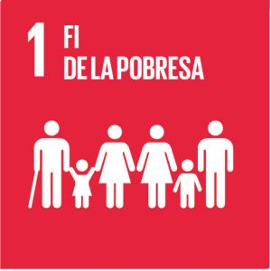
- 2. Fam zero
- La sobreexplotació dels recursos i el canvi climàtic estan reduint la disponibilitat
d’aliments. L’ODS 2 busca garantir sistemes alimentaris sostenibles.
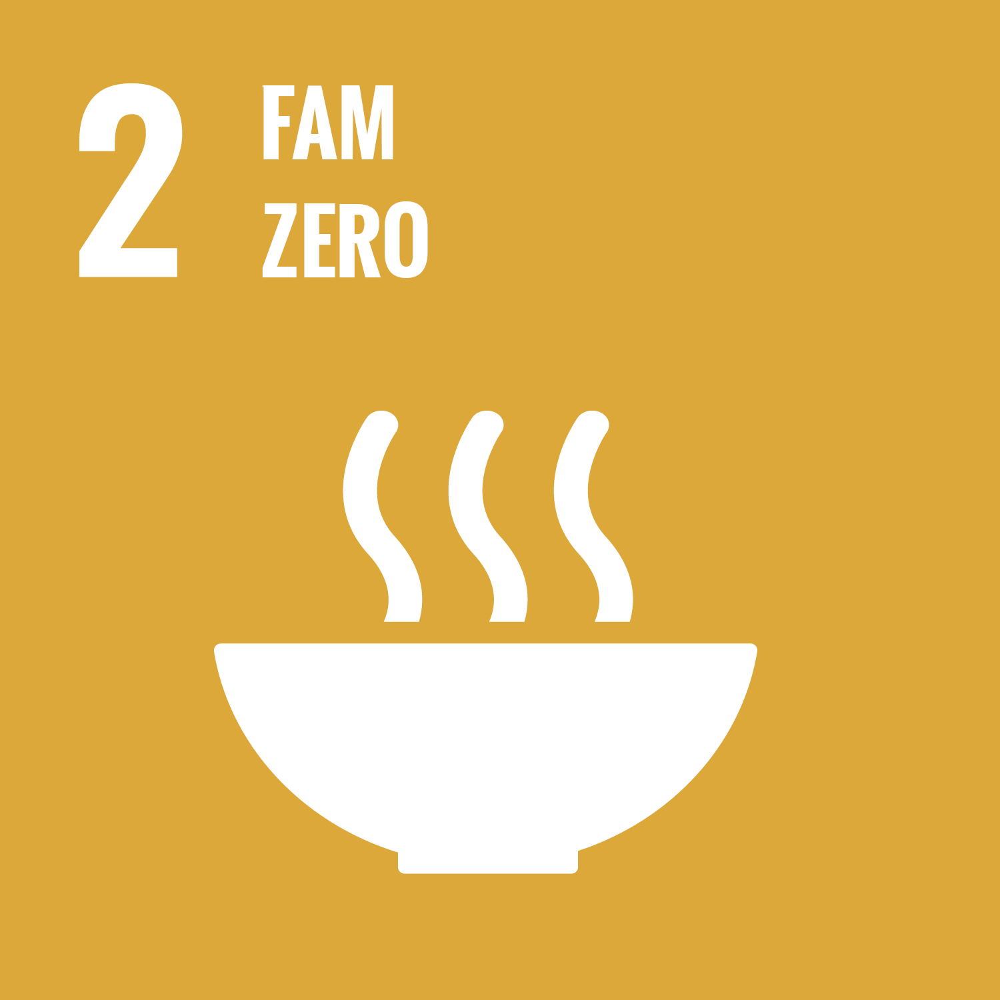
- 3. Salut i benestar
-
Pretén assegurar una vida saludable i promoure el benestar per a totes les edats,
reduint la mortalitat infantil, millorant l’accés a serveis sanitaris i reforçant
la preparació davant pandèmies.
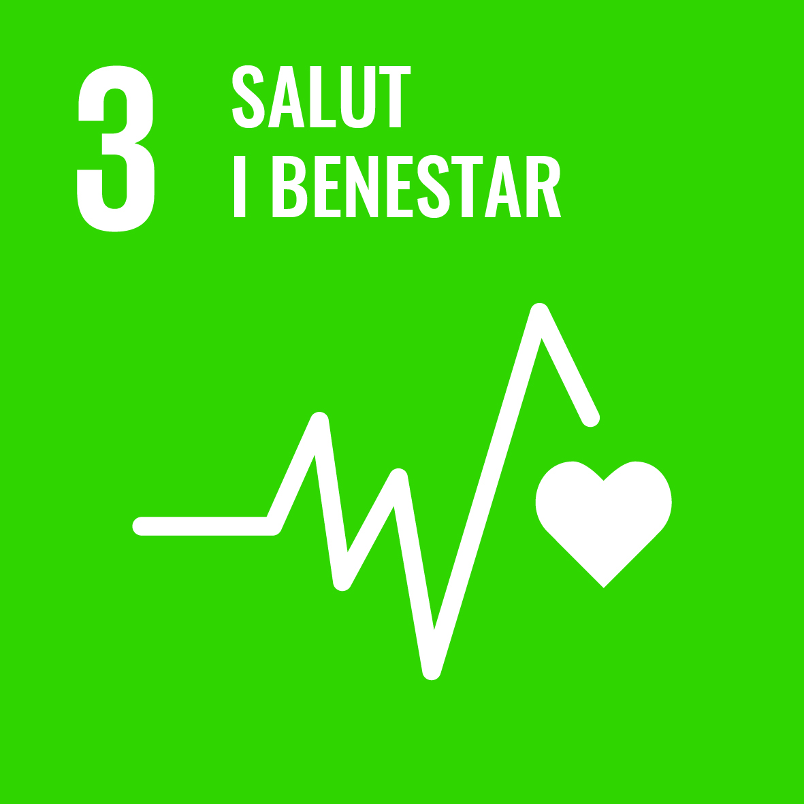
- 4. Educació de qualitat
-
Busca garantir una educació inclusiva, equitativa i de qualitat, així com oportunitats
d’aprenentatge al llarg de tota la vida per a tothom.
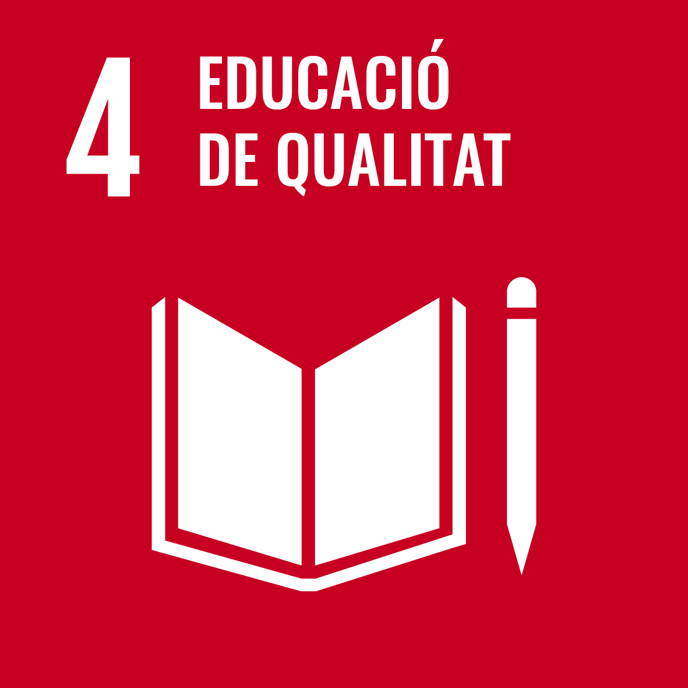
- 5. Igualtat de gènere
-
L’objectiu és eliminar totes les formes de discriminació i violència contra dones i
nenes, i garantir la seva plena participació en tots els àmbits socials.
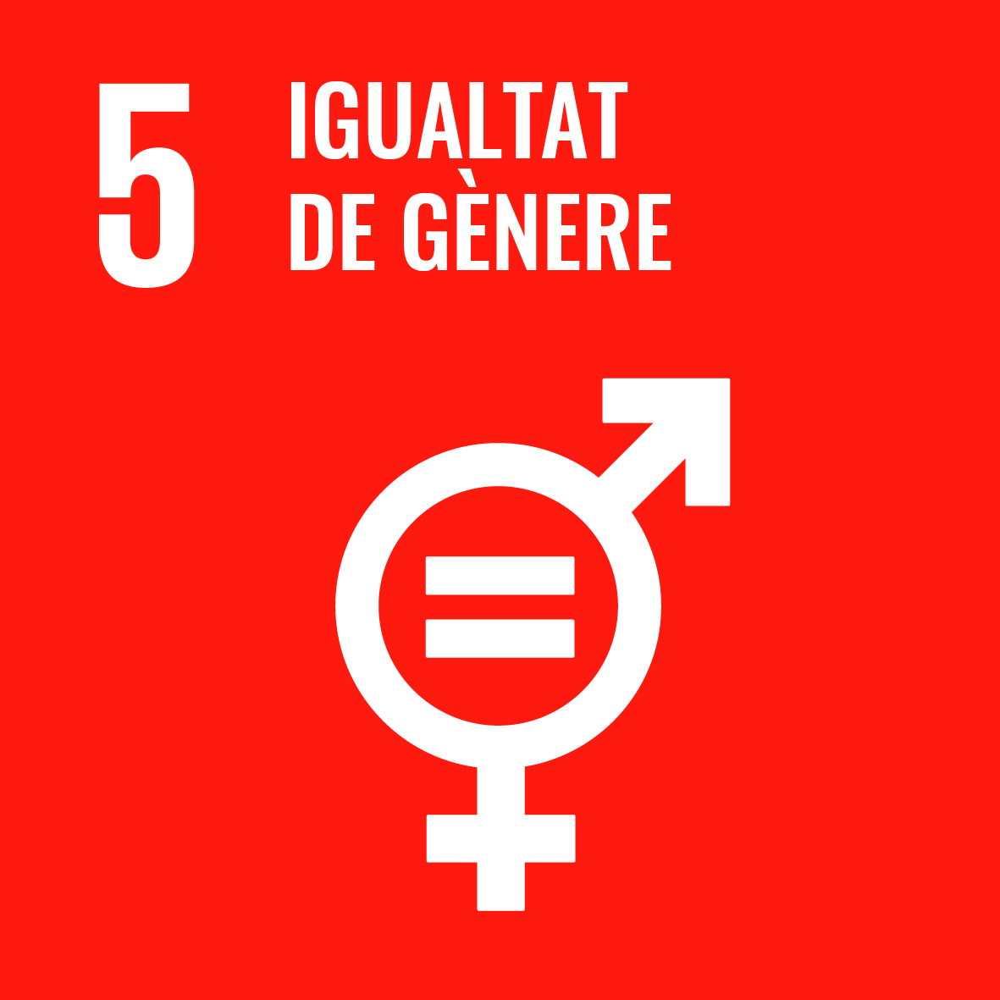
- 6. Aigua neta i sanejament
-
Pretén assegurar l’accés universal a l’aigua potable segura i a serveis de sanejament,
així com millorar la gestió sostenible dels recursos hídrics.
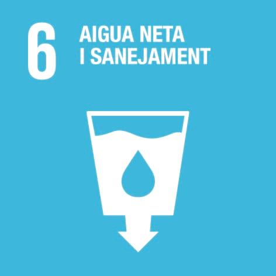
- 7. Energia assequible i no contaminant
-
Promou l’accés universal a una energia assequible, fiable i moderna, incrementant
l’ús de fonts renovables i l’eficiència energètica.
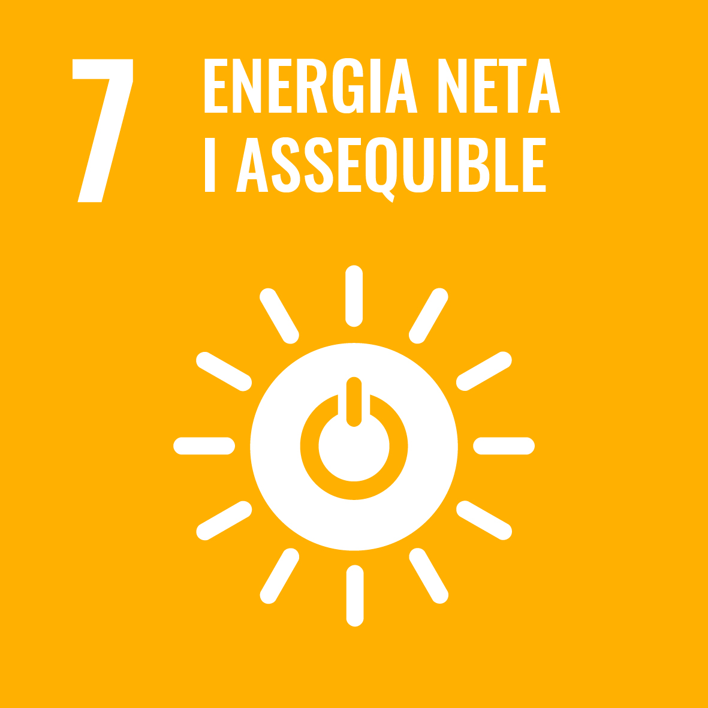
- 8. Treball digne i creixement econòmic
-
Fomenta el creixement econòmic sostingut, la productivitat i la creació d’ocupació
digna, reduint el treball forçós i infantil.
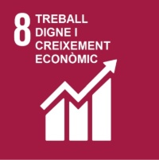
- 9. Indústria, innovació i infraestructura
-
Impulsa infraestructures resilients, industrialització sostenible i innovació
tecnològica per millorar la competitivitat i el desenvolupament.
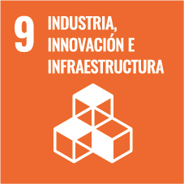
- 10. Reducció de les desigualtats
-
Treballa per reduir les desigualtats econòmiques, socials i d’oportunitats entre
països i dins de cada societat.
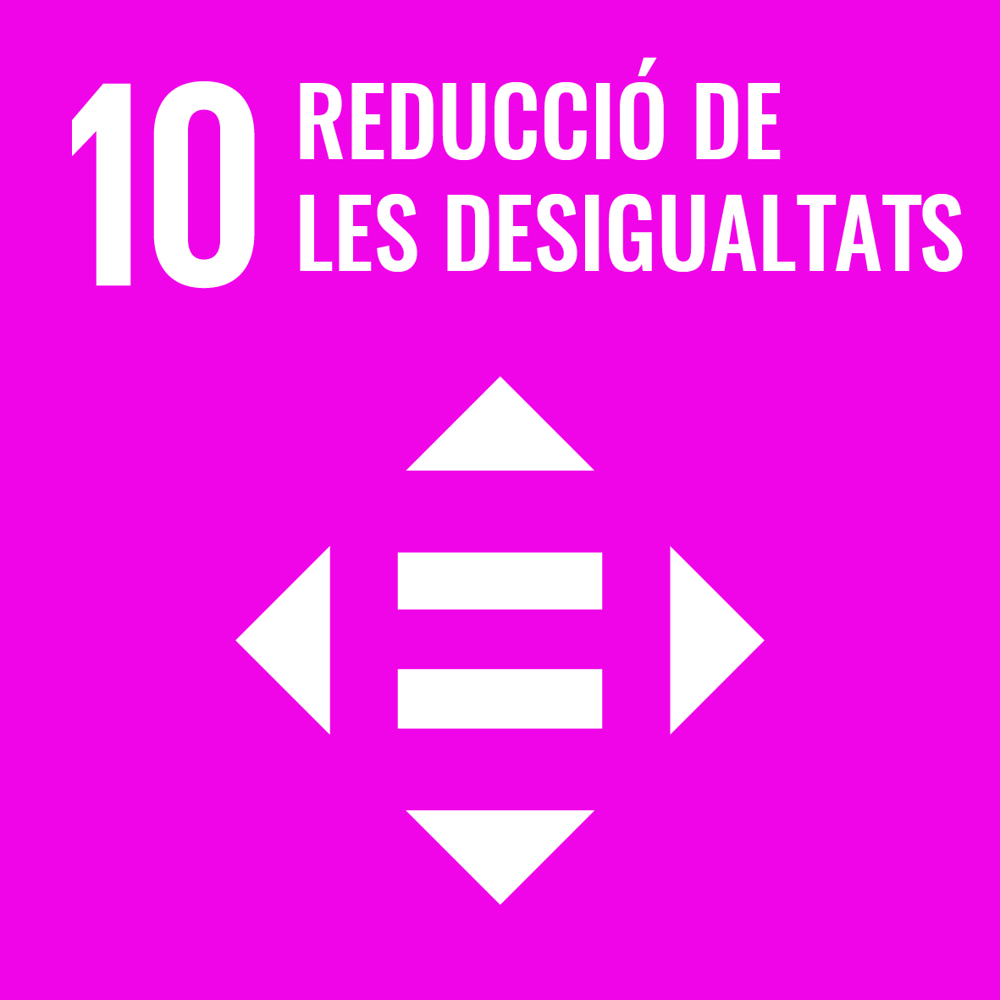
- 11. Ciutats i comunitats sostenibles
-
Promou ciutats inclusives, segures i sostenibles, amb millor mobilitat, habitatge
assequible i espais verds.
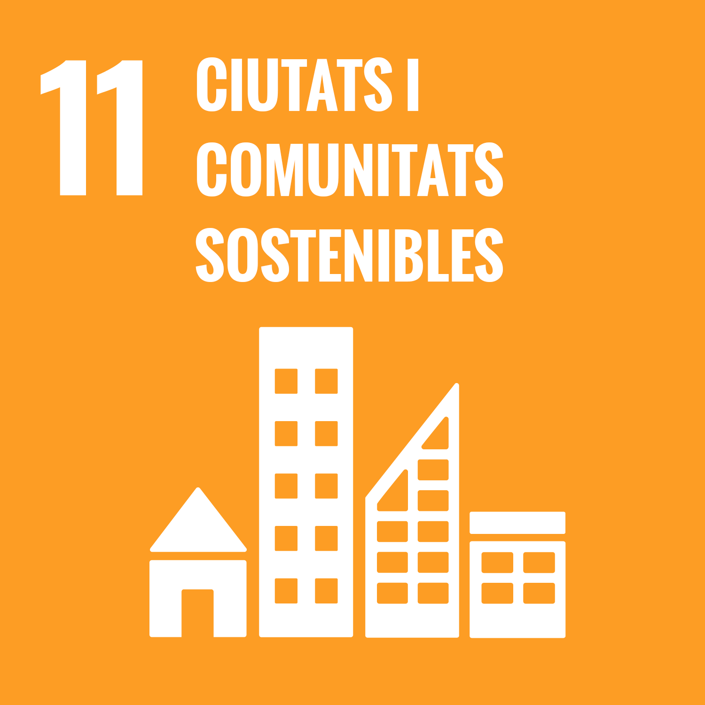
- 12. Consum i producció responsables
-
Fomenta l’ús eficient dels recursos, la reducció de residus i la transició cap a
models d’economia circular.
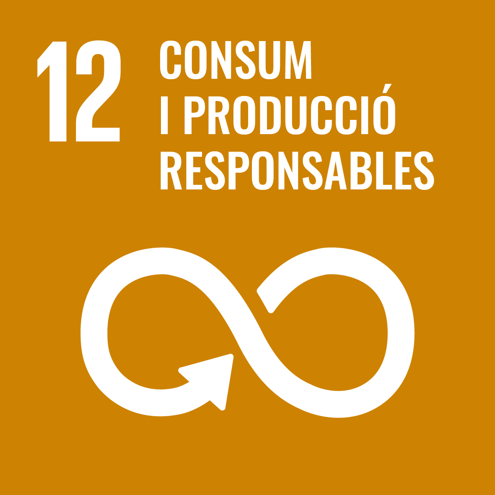
- 13. Acció pel clima
-
Pretén adoptar mesures urgents per combatre el canvi climàtic, reduir emissions i
reforçar la resiliència davant fenòmens extrems.
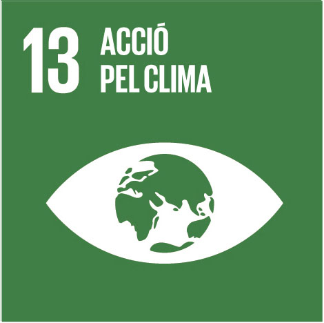
- 14. Vida submarina
-
Protegeix els oceans, lluita contra la contaminació marina i promou la pesca
sostenible per preservar els ecosistemes aquàtics.
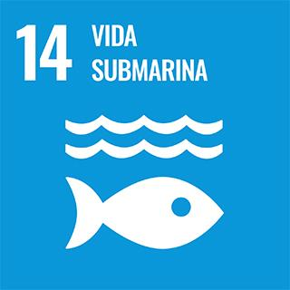
- 15. Vida terrestre
-
Defensa la biodiversitat, els boscos i els ecosistemes terrestres, combatent la
desertificació i la pèrdua d’hàbitats naturals.
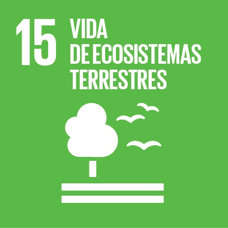
- 16. Pau, justícia i institucions sòlides
-
Promou societats pacífiques, accés a la justícia i institucions eficaces, responsables
i transparents.
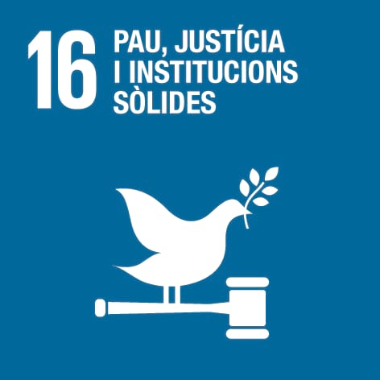
- 17. Aliança per als objectius
-
Impulsa la cooperació internacional, el finançament sostenible i les aliances globals
per assolir tots els ODS.
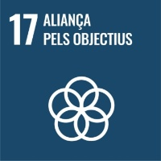
La Unió Europea i els ODS
La UE integra els ODS en totes les seves polítiques ambientals, socials i econòmiques.
Programes destacats
- Horizon Europe – Innovació i recerca
- Life Programme – Acció climàtica
- Fons Social Europeu – Inclusió i igualtat
Programes de la UE relacionats amb els ODS
| Programa |
Objectiu ODS |
| Horizon Europe |
ODS 9 – Innovació i indústria sostenible |
| Life Programme |
ODS 13 – Acció pel clima |
| Fons Social Europeu |
ODS 10 – Reducció de desigualtats |
Pacte Verd Europeu
El Pacte Verd Europeu és la fulla de ruta per aconseguir la neutralitat climàtica el 2050.
“Europa serà el primer continent climàticament neutre.”
Comissió Europea
- Transició energètica cap a renovables
- Economia circular
- Protecció de la biodiversitat
- Reducció d’emissions
Imatges

ODS – Acció pel clima
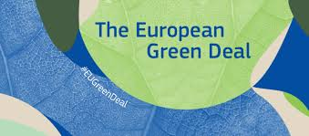
Pacte Verd Europeu
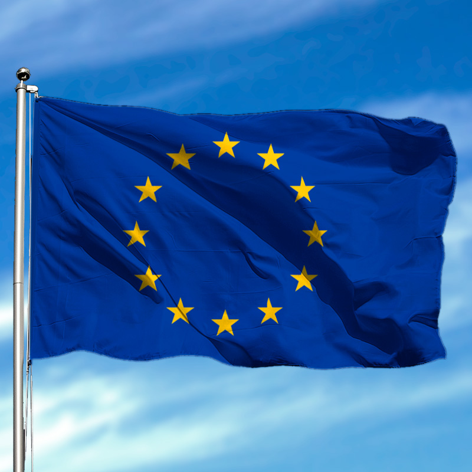
Polítiques europees
Finançament de la sostenibilitat
La UE impulsa projectes verds a través de fons com Next Generation EU.
Àrees de finançament
- Transició ecològica
- Digitalització
- Innovació i recerca